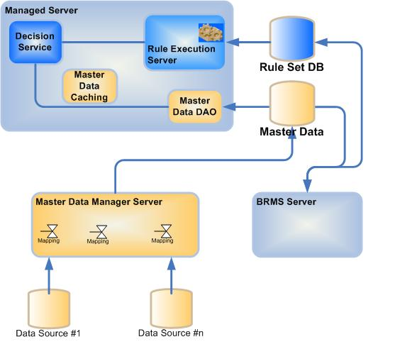

| Task: Design Integration to Reference Data |
 |
|
| Roles | Primary Performer: | Additional Performers: |
|---|
Data management need to be considered from the methodology point of view, such as data origination, data management, and data consumption. The architect needs to understand how the master data are coming from and how they are updated. The life cycle of such data can lead to version and management control, that may add complexity on top of the services versioning. The data consumption has to be addressed for the execution environment and also in the case of BRMS deployment for the rule authoring environment. The following diagram highlights a high level architecture architect can leverage to design his own solution.
 The master data are centralized in a repository, and technology as Master Data Management product can be used for that. The different sources of data are synchronized with this repository on a regular basis, using different implementation mechanism based on ETL, ESB, web services or custom layer. A mapping mechanism as to be applied to persist the data in the repository. The Execution environment can fetch the last version or a given version of the data from this repository and cache it. The same applies for the rule authoring environment: The BRMS server can load the data and cache it in the web server. With such simple architecture the rule writer can have access to a unique definition of the enumerated domains or other business objects, like a Product definition. |
This program and the accompanying materials are made available under the |